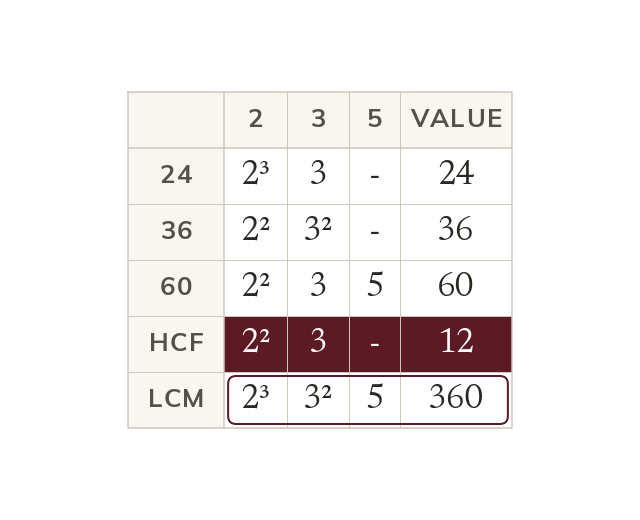

HCF and LCM with three numbers
HCF: primes in all three numbers, at the lowest power. LCM: every prime in any of them, at the highest power.
The same rules extend directly to three (or more) numbers. The HCF is the product of each prime that appears in ALL THREE numbers, taken to the LOWEST power it has across all three. The LCM is the product of every prime that appears in ANY of the three numbers, taken to the HIGHEST power it has across all three.